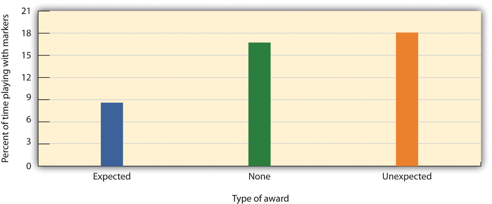
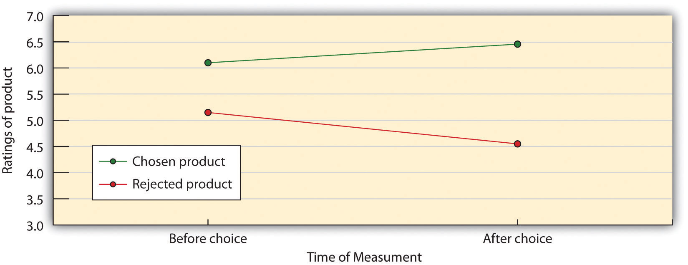

Although it might not have surprised you to hear that we can often predict people’s behaviors if we know their thoughts and their feelings about the attitude object, you might be more surprised to find that our actions also have an influence on our thoughts and feelings. It makes sense that if I like Cheerios, I’ll buy them, because my thoughts and feelings about a product influence my behavior. But will my attitudes toward Frosted Flakes become more positive if I decide—for whatever reason—to buy them instead of Cheerios?
It turns out that if we engage in a behavior, and particularly one that we had not expected that we would have, our thoughts and feelings toward that behavior are likely to change. This might not seem intuitive, but it represents another example of how the principles of social psychology—in this case the principle of attitude consistency—lead us to make predictions that wouldn’t otherwise be that obvious.
Imagine that one Tuesday evening in the middle of the semester you see your friend Joachim. He’s just finished his dinner and tells you that he’s planning to head home to study and work on a term paper. When you see him the next day, however, he seems a bit shaken. It turns out that instead of going home to study, Joachim spent the entire evening listening to music at a rock club in town. He says that he had a great time, stayed up late to watch the last set, and didn’t get home until the crack of dawn. And he woke up so late this morning that he missed his first two classes.
You might imagine that Joachim might be feeling some uncertainty and perhaps some regret about his unexpected behavior the night before. Although he knows that it is important to study and to get to his classes on time, he nevertheless realizes that, at least in this case, he neglected his schoolwork in favor of another activity. Joachim seems to be wondering why he, who knows how important school is, engaged in this behavior after he promised himself that he was going home to study. Let’s see if we can use the principles of attitude consistency to help us understand how Joachim might respond to his unexpected behavior and how his attitudes toward listening to music and studying might follow from it.
People have an avid interest in understanding the causes of behavior, both theirs and others, and doing so helps us meet the important goals of other-concern and self-concern. If we can better understand how and why the other people around us act the way they do, then we will have a better chance of avoiding harm from others and a better chance of getting those other people to cooperate with and like us. And if we have a better idea of understanding the causes of our own behavior, we can better work to keep that behavior in line with our preferred plans and goals.
In some cases people may be somewhat unsure about their attitudes toward different attitude objects. For instance, perhaps Joachim is a bit unsure about his attitude toward schoolwork versus listening to music (and this uncertainty certainly seems to be increasing in light of his recent behavior). Might Joachim look at his own behavior to help him determine his thoughts and feelings, just as he might look at the behavior of others to understand why they act the way that they do? Self-perceptionThe process of using our perceptions of our behavior to help us determine our attitudes toward an attitude object. occurs when we use our own behavior as a guide to help us determine our own thoughts and feelings (Bem, 1972; Olson & Stone, 2005).Bem, D. J. (1965). An experimental analysis of self-persuasion. Journal of Experimental Social Psychology, 1(3), 199–218; Olson, J. M., & Stone, J. (2005). The influence of behavior on attitudes. In D. Albarracín, B. T. Johnson, & M. P. Zanna (Eds.), The handbook of attitudes (pp. 223–271). Mahwah, NJ: Lawrence Erlbaum.
Looking at Our Own Behavior to Determine Our Attitudes
Eliot Aronson and J. Merrill Carlsmith (1963)Aronson, E., & Carlsmith, J. M. (1963). Effect of the severity of threat on the devaluation of forbidden behavior. Journal of Abnormal and Social Psychology, 66(6), 584–588. conducted an experiment to determine whether young children might look at their own behavior to help determine their attitudes toward toys. In their research, they first had the children rate the attractiveness of several toys. They then chose a toy that a child had just indicated he or she really wanted to play with and—this was rather mean—told that child he or she could not play with that toy. Furthermore, and according to random assignment to conditions, half of the children were threatened with mild punishment if they disobeyed and the other half were threatened with severe punishment. In the mild threat condition the experimenter said, “I don't want you to play with the toy. If you played with it, I would be annoyed,” whereas in the harsh threat condition the experimenter said, “I don't want you to play with the toy. If you played with it, I would be very angry. I would have to take all of my toys and go home and never come back again.” The experimenter then left the room for a few minutes to give the children the time and opportunity to play with the other toys and to resist the temptation of playing with the forbidden toy, while watching the children through a one-way mirror.
It turned out that both the harsh and the mild threat were sufficient to prevent the children from playing with the forbidden toy—none of the children actually did so. Nevertheless, when the experimenter returned to the room and asked each child to again rate how much he or she liked the forbidden toy, the children who had received the harsh threat rated the toy significantly more positively than the children who had received the mild threat. Furthermore, the children who had only received the mild threat actually rated the forbidden toy less positively than they had at the beginning of the experiment. And this change was long lasting. Even when tested several weeks later, children still showed these changes (Freedman, 1965).Freedman, J. L. (1965). Long-term behavioral effects of cognitive dissonance. Journal of Experimental Social Psychology, 1(2), 145–155.
The results of this study indicate that the children’s self-perceptions of their behaviors influenced their attitudes toward the toys. Assume for a moment that the children were a bit unsure about how much they liked the toy that they did not play with and that they needed some information to determine their beliefs. The children in the harsh threat condition had a strong external reason for not having played with the toy—they were going to get into really big trouble if they did. Because these children likely saw the social situation as the cause of their behavior, they found it easy to believe that they still liked the toy a lot. For the children in the mild threat condition, however, the external reasons for their behavior were not so apparent—they had only been asked not to play with the toy. These children were more likely to come to the conclusion that their behavior was caused by internal, person factors—that they did not play with the toy simply because they did not like it that much.
We can use the principles of self-perception to help understand how Joachim is interpreting his behavior of staying out all night at the club rather than studying. When Joachim looks at this behavior, he may start to wonder why he engaged in it. One answer is that the social situation caused the behavior—he might decide that the band he heard last night was so fantastic that he simply had to go hear them and could not possibly have left the club early. Blaming the situation for the behavior allows him to avoid blaming himself for it and to avoid facing the fact that he found listening to music more important than his schoolwork. But the fact that Joachim is a bit worried about his unusual behavior suggests that he, at least in part, might be starting to wonder about his own motivations.
Perhaps you have experienced the effects of self-perception. Have you ever found yourself becoming more convinced about an argument you were making as you heard yourself making it? Or did you ever realize how thirsty you must have been as you quickly drank a big glass of water? Research has shown that self-perception occurs regularly and in many different domains. For instance, Gary Wells and Richard Petty (1980)Wells, G. L., & Petty, R. E. (1980). The effects of overt head movements on persuasion: Compatibility and incompatibility of responses. Basic and Applied Social Psychology, 1(3), 219–230. found that people who were asked to shake their heads up and down rather than sideways while reading arguments favoring or opposing tuition increases at their school ended up agreeing with the arguments more, and Daryl Bem (1965)Bem, D. J. (1965). An experimental analysis of self-persuasion. Journal of Experimental Social Psychology, 1(3), 199–218. found that when people were told by the experimenter to say that certain cartoons were funny, they ended up actually finding those cartoons funnier. It appears in these cases that people looked at their own behavior: If they moved their head up and down or said that the cartoons were funny, they figured that they must agree with the arguments and like the cartoon.
You may recall that one common finding in social psychology is that people frequently do not realize the extent to which behavior is influenced by the social situation. Although this is particularly true for the behavior of others, in some cases it may apply to understanding our own behavior as well. This means that, at least in some cases, we may believe that we have chosen to engage in a behavior for personal reasons, even though external, situational factors have actually led us to it. Consider again the children who did not play with the forbidden toy in the Aronson and Carlsmith study, even though they were given only a mild reason for not doing so. Although these children were actually led to avoid the toy by the power of the situation (they certainly would have played with it if the experimenter hadn’t told them not to), they frequently concluded that the decision was a personal choice and ended up believing that the toy was not that fun after all. When the social situation actually causes our behavior, but we do not realize that the social situation was the cause, we call the phenomenon insufficient justificationThe perception that a threat or reward that is in fact sufficient to get the person to engage in or avoid a behavior is not sufficient.. Insufficient justification occurs when the threat or reward is actually sufficient to get the person to engage in or to avoid a behavior, but the threat or reward is insufficient to allow the person to conclude that the situation caused the behavior.
Although insufficient justification leads people to like something less because they (incorrectly) infer that they did not engage in a behavior due to internal reasons, it is also possible that the opposite may occur. People may in some cases come to like a task less when they perceive that they did engage in it for external reasons. OverjustificationThe viewing of our behavior as caused by the situation, leading us to discount the extent to which our behavior was actually caused by our own interest in the activity. occurs when we view our behavior as caused by the situation, leading us to discount the extent to which our behavior was actually caused by our own interest in it (Deci, Koestner, & Ryan, 1999; Lepper & Greene, 1978).Deci, E. L., Koestner, R., & Ryan, R. M. (1999). A meta-analytic review of experiments examining the effects of extrinsic rewards on intrinsic motivation. Psychological Bulletin, 125(6), 627–668; Lepper, M. R., & Greene, D. (1978). The hidden costs of reward: New perspectives on the psychology of human motivation. Hillsdale, NJ: Lawrence Erlbaum.
Mark Lepper and his colleagues (Lepper, Greene, & Nisbett, 1973)Lepper, M. R., Greene, D., & Nisbett, R. E. (1973). Undermining children’s intrinsic interest with extrinsic reward: A test of the “overjustification” hypothesis. Journal of Personality and Social Psychology, 28, 129–137. studied the overjustification phenomenon by leading some children to think that they engaged in an activity for a reward rather than because they simply enjoyed it. First, they placed some fun felt-tipped markers into the classroom of the children they were studying. The children loved the markers and played with them right away. Then, the markers were taken out of the classroom and the children were given a chance to play with the markers individually at an experimental session with the researcher. At the research session, the children were randomly assigned to one of three experimental groups. One group of children (the expected reward condition) was told that if they played with the markers they would receive a good drawing award. A second group (the unexpected reward condition) also played with the markers and got the award—but they were not told ahead of time that they would be receiving the award (it came as a surprise after the session). The third group (the no reward condition) played with the markers too but got no award.
Then, the researchers placed the markers back in the classroom and observed how much the children in each of the three groups played with them. The results are shown in Figure 5.5 "Undermining Initial Interest in an Activity". The fascinating result was that the children who had been led to expect a reward for playing with the markers during the experimental session played with the markers less at the second session than they had at the first session. Expecting to receive the award at the session had undermined their initial interest in the markers.
Figure 5.5 Undermining Initial Interest in an Activity
Children who had been expecting to receive a reward when they played with the fun markers played less with them in their free play period than did children who received no reward or an unexpected reward—their initial interest had been undermined by the expected reward. Data are from Lepper, Greene, and Nisbett (1973).Lepper, M. R., Greene, D., & Nisbett, R. E. (1973). Undermining children’s intrinsic interest with extrinsic reward: A test of the “overjustification” hypothesis. Journal of Personality and Social Psychology, 28, 129–137.
Although this might not seem logical at first, it is exactly what is expected on the basis of the principle of overjustification. When the children had to choose whether or not to play with the markers when the markers reappeared in the classroom, they based their decision on their own prior behavior. The children in the no reward condition group and the children in the unexpected reward condition group realized that they played with the markers because they liked them. Children in the expected award condition group, however, remembered that they were promised a reward for the activity before they played with the markers the last time. These children were more likely to draw the inference that they play with the markers mostly for the external reward, and because they did not expect to get any reward for playing with the markers in the classroom they discounted the possibility that they enjoyed playing the markers because they liked them. As a result, they played less frequently with the markers in comparison to the children in the other groups.
This research suggests that, although giving rewards may in many cases lead us to perform an activity more frequently or with more effort, reward may not always increase our liking for the activity. In some cases reward may actually make us like an activity less than we did before we were rewarded for it. And this outcome is particularly likely when the reward is perceived as an obvious attempt on the part of others to get us to do something. When children are given money by their parents to get good grades in school, they may improve their school performance to gain the reward. But at the same time their liking for school may decrease. On the other hand, rewards that are seen as more internal to the activity, such as rewards that praise us, remind us of our achievements in the domain, and make us feel good about ourselves as a result of our accomplishments, are more likely to be effective in increasing not only the performance of, but also the liking of, the activity (Deci & Ryan, 2002; Hulleman, Durik, Schweigert, & Harackiewicz, 2008).Deci, E. L., & Ryan, R. M. (2002). Self-determination research: Reflections and future directions. In E. L. Deci & R. M. Ryan (Eds.), Handbook of self-determination research (pp. 431–441). Rochester, NY: University of Rochester Press; Hulleman, C. S., Durik, A. M., Schweigert, S. B., & Harackiewicz, J. M. (2008). Task values, achievement goals, and interest: An integrative analysis. Journal of Educational Psychology, 100(2), 398–416. doi: 10.1037/0022-0663.100.2.398
In short, when we use harsh punishments we may prevent a behavior from occurring. However, because the person sees that it is the punishment that is controlling the behavior, the person’s attitudes may not change. Parents who wish to encourage their children to share their toys or to practice the piano therefore would be wise to provide “just enough” external incentive. Perhaps a consistent reminder of the appropriateness of the activity would be enough to engage the activity, making a stronger reprimand or other punishment unnecessary. Similarly, when we use extremely positive rewards, we may increase the behavior but at the same time undermine the person’s interest in the activity.
The problem, of course, is finding the right balance between reinforcement and overreinforcement. If we want our child to avoid playing in the street, and if we provide harsh punishment for disobeying, we may prevent the behavior but not change the attitude. The child may not play in the street while we are watching but do so when we leave. Providing less punishment is more likely to lead the child to actually change his or her beliefs about the appropriateness of the behavior, but the punishment must be enough to prevent the undesired behavior in the first place. The moral is clear: If we want someone to develop a strong attitude, we should use the smallest reward or punishment that is effective in producing the desired behavior.
Let’s return once more to our friend Joachim and imagine that we now discover that over the next two weeks he has spent virtually every night at clubs listening to music rather than studying. And these behaviors are starting to have some severe consequences: He just found out that he’s failed his biology midterm. How will he ever explain that to his parents? What were at first relatively small discrepancies between self-concept and behavior are starting to snowball, and they are starting to have more affective consequences. Joachim is realizing that he’s in big trouble—the inconsistencies between his prior attitudes about the importance of schoolwork and his behavior are creating some significant threats to his positive self-esteem. The discomfort that occurs when we behave in ways that we see as inappropriate, such as when we fail to live up to our own expectations, is called cognitive dissonanceThe discomfort that occurs when we behave in ways that we see as inappropriate, such as when we fail to live up to our own expectations. (Cooper, 2007; Festinger, 1957; Harmon-Jones & Mills, 1999).Cooper, J. M. (2007). Cognitive dissonance: 50 years of a classical theory. Thousand Oaks, CA: Sage; Festinger, L. (1957). A theory of cognitive dissonance. Evanston, IL: Row, Peterson; Harmon-Jones, E., & Mills, J. (1999). Cognitive dissonance: Progress on a pivotal theory in social psychology. Washington, DC: American Psychological Association. The discomfort of cognitive dissonance is experienced as pain, showing up in a part of the brain that is particularly sensitive to pain—the anterior cingulate cortex (van Veen, Krug, Schooler, & Carter, 2009).van Veen, V., Krug, M. K., Schooler, J. W., & Carter, C. S. (2009). Neural activity predicts attitude change in cognitive dissonance. Nature Neuroscience, 12(11), 1469–1474.
Leon Festinger and J. Merrill Carlsmith (1959)Festinger, L., & Carlsmith, J. M. (1959). Cognitive consequences of forced compliance. Journal of Abnormal and Social Psychology, 58, 203–210. conducted an important study designed to demonstrate the extent to which behaviors that are discrepant from our initial beliefs can create cognitive dissonance and can influence attitudes. College students participated in an experiment in which they were asked to work on a task that was incredibly boring and lasted for a full hour. After they had finished the task, the experimenter explained that the assistant who normally helped convince people to participate in the study was unavailable and that he could use some help persuading the next person that the task was going to be interesting and enjoyable. The experimenter explained that it would be much more convincing if a fellow student rather than the experimenter delivered this message and asked the participant if he would be willing do to it. Thus with his request the experimenter induced the participants to lie about the task to another student, and all the participants agreed to do so.
The experimental manipulation involved the amount of money the students were paid to tell the lie. Half of the students were offered a large payment ($20) for telling the lie, whereas the other half were offered only a small payment ($1) for telling the lie. After the participants had told the lie, an interviewer asked each of them how much they had enjoyed the task they had performed earlier in the experiment. As you can see in Figure 5.6 "Festinger and Carlsmith", Festinger and Carlsmith found that the students who had been paid $20 for saying the tasks had been enjoyable rated the task as very boring, which indeed it was. In contrast, the students who were paid only $1 for telling the lie changed their attitude toward the task and rated it as significantly more interesting.
Festinger explained the results of this study in terms of consistency and inconsistency among cognitions. He hypothesized that some thoughts might be dissonant, in the sense that they made us feel uncomfortable, while other thoughts were more consonant, in the sense that they made us feel good. He argued that people may feel an uncomfortable state (which he called cognitive dissonance) when they have many dissonant thoughts—for instance, between the idea that (a) they are smart and decent people and (b) they nevertheless told a lie to another student for only a small payment.
Festinger argued that the people in his experiment who had been induced to lie for only $1 experienced more cognitive dissonance than the people who were paid $20 because the latter people had a strong external justification for having done it whereas the former did not. The people in the $1 condition, Festinger argued, needed to convince themselves that that the task was actually interesting to reduce the dissonance they were experiencing.
Figure 5.6 Festinger and Carlsmith
Participants who had engaged in a boring task and then told another student it was interesting experienced cognitive dissonance, leading them to rate the task more positively in comparison to those who were paid $20 to do the same. Data are from Festinger and Carlsmith (1959).Festinger, L., & Carlsmith, J. M. (1959). Cognitive consequences of forced compliance. Journal of Abnormal and Social Psychology, 58, 203–210.
Although originally considered in terms of the inconsistency among different cognitions, Festinger’s theory has also been applied to the negative feelings that we experience when there is inconsistency between our attitudes and our behavior, and particularly when the behavior threatens our perceptions of ourselves as good people (Aronson, 1969).Aronson, E. (1969). The theory of cognitive dissonance: A current perspective. In L. Berkowitz (Ed.). Advances in experimental social psychology (Vol. 4, pp. 1–34). New York, NY: Academic Press. Thus Joachim is likely feeling cognitive dissonance because he has acted against his better judgment and these behaviors are having some real consequences for him. The dissonant thoughts involve (a) his perception of himself as a hardworking student, compared to (b) his recent behaviors that do not support that idea. Our expectation is that Joachim will not enjoy these negative feelings and will attempt to get rid of them.
Because Joachim’s perception of himself as a hardworking student is now in jeopardy, he is feeling cognitive dissonance and will naturally try to reduce these negative emotions. He can do so in a number of ways. One possibility is that Joachim could simply change his behavior by starting to study more and go out less. If he is successful in doing this, his dissonance will clearly be reduced and he can again feel good about himself. But it seems that he has not been very successful in this regard—over the past weeks he has continually put off studying for listening to music. A second option is to attempt to reduce his dissonant cognitions—those that threaten his self-esteem. Perhaps he might try to convince himself that he has only failed one test and that he didn’t expect to do very well in biology anyway. If he can make the negative behaviors seem less important, dissonance will be reduced.
One of Festinger’s most powerful insights into social psychology was that, even if Joachim cannot change his behavior and even if he knows that what he’s doing has negative consequences, he still has a third option: He can create new consonant cognitions to counteract the dissonant cognitions. For instance, Joachim might try to convince himself that he is going to become an important record producer some day and that it is therefore essential that he attend many concerts. When Joachim takes this route he changes his beliefs to be more in line with his behavior, and the outcome is that he has now restored attitude consistency. His behaviors no longer seem as discrepant from his attitudes as they were before, and when consistency is restored, dissonance is reduced. What the principles of cognitive dissonance suggest, then, is that we may frequently spend more energy convincing ourselves that we are good people than we do thinking of ourselves accurately. Of course we do this because viewing ourselves negatively is painful.
Cognitive dissonance is an important social psychological principle that can explain how attitudes follow behavior in many domains of our everyday life. For instance, people who try but fail to quit smoking cigarettes naturally suffer lowered self-esteem (Gibbons, Eggleston, & Benthin, 1997).Gibbons, F. X., Eggleston, T. J., & Benthin, A. C. (1997). Cognitive reactions to smoking relapse: The reciprocal relation between dissonance and self-esteem. Journal of Personality and Social Psychology, 72(1), 184–195. But rather than accepting this negative feeling, they frequently attempt to engage in behaviors that reduce dissonance. They may try to convince themselves that smoking is not that bad: “My grandmother smoked but lived to be 93 years old!” “I’m going to quit next year!” Or they may try to add new consonant cognitions: “Smoking is fun; it relaxes me.” You can see that these processes, although making us feel better about ourselves at least in the short run, may nevertheless have some long-term negative outcomes.
Elliot Aronson and Judson Mills (1959)Aronson, E., & Mills, J. (1959). The effect of severity of initiation on liking for a group. Journal of Abnormal and Social Psychology, 59, 171–181. studied whether the cognitive dissonance created by an initiation process could explain how much commitment students felt to a group they were part of. In their experiment, female college students volunteered to join a group that would be meeting regularly to discuss various aspects of the psychology of sex. According to random assignment, some of the women were told that they would be required to perform an embarrassing procedure (they were asked to read some obscene words and some sexually oriented passages from a novel in public) before they could join the group, whereas other women did not have to go through this initiation. Then all the women got a chance to listen to the group’s conversation, which turned out to be very boring.
Aronson and Mills found that the women who had gone through the embarrassing experience subsequently reported more liking for the group than those who had not, and Gerard and Matthewson (1966)Gerard, H. B., & Matthewson, G. C. (1966). The effects of severity of initiation on liking for a group: A replication. Journal of Experimental Social Psychology, 2, 278–287. found that having to take some electrical shocks as part of an initiation process had the same effect. Aronson and Mills argued that the more effort an individual expends to become a member of the group (for instance, a severe initiation), the more he will become committed to the group in order to justify the effort he has put in during the initiation. The idea is that the effort creates dissonant cognitions (“I did all this work to join the group”), which are then justified by creating more consonant ones (“OK, this group is really pretty fun”). The women who spent little effort to get into the group were able to see the group as the dull and boring conversation that it was. The women who went through the more severe initiation, however, succeeded in convincing themselves that the same discussion was a worthwhile experience. When we put in effort for something—an initiation, a big purchase price, or even some of our precious time—we will likely end up liking the activity more than we would have if the effort had been less. Even the effort of having to fill out a purchase agreement for a product, rather than having the salesperson do it for you, creates commitment to the purchase and a greater likelihood of staying in the deal (Cialdini, 1988).Cialdini, R. (1988). Influence: Science and practice. Glenview, IL: Scott Foresman.
Another time you may have experienced the negative affective state of cognitive dissonance is after you have made an important and irrevocable decision. Imagine that you are about to buy a new car and you have narrowed your search to a small new car and a larger (but much cheaper) used car. The problem is that you can see advantages and disadvantages to each. For instance, the smaller car would get better gas mileage, but the larger car—because it is used—is cheaper. Imagine, however, that you finally decide to buy the larger car because you feel that you really don’t have enough money for the new car.
That night, you’re lying in bed and wondering about your decision. Although you’ve enjoyed driving the big car that you have just purchased, you’re worried about rising gas costs, the negative impact of the big car on the environment, and the possibility that the car might need a lot of repairs. Have you made the right decision? This “buyer’s remorse” can be interpreted in terms of postdecisional dissonanceThe feeling of regret that occurs after we make an important decision.—the feeling of regret that may occur after we make an important decision (Brehm, 1956).Brehm, J. W. (1956). Postdecision changes in the desirability of alternatives. Journal of Abnormal and Social Psychology, 52(3), 384–389. However, the principles of dissonance predict that once you make the decision—and regardless of which car you choose—you will convince yourself that you made the right choice. I would predict that since you have chosen the larger car you will begin to think more about the positive aspects of the choice that you have made (what you are going to be able to do with the money you saved, rather than how much more it is going to cost to fill up the gas tank) and at the same time you will likely downplay the values of the smaller car.
Jack Brehm (1956)Brehm, J. W. (1956). Postdecision changes in the desirability of alternatives. Journal of Abnormal and Social Psychology, 52(3), 384–389. posed as a representative of a consumer testing service and asked women to rate the attractiveness and desirability of several kinds of appliances, such as toasters and electric coffee makers. Each woman was told that as a reward for having participated in the survey, she could have one of the appliances as a gift. She was given a choice between two of the products she had rated as being about equally attractive. After she made her decision, her appliance was wrapped up and given to her. Then, 20 minutes later, each woman was asked to rerate all the products. As you can see in Figure 5.7 "Postdecisional Dissonance", Brehm found that the women rated the appliance that they had chosen and been given as a gift higher than they had the first time. And the women also lowered their rating of the appliance they might have chosen but decided to reject. These results are of course consistent with the principles of cognitive dissonance—post-decisional dissonance is reduced by focusing on the positive aspects of the chosen product and the negative aspects of the rejected product.
Figure 5.7 Postdecisional Dissonance
As predicted by the desire to reduce postdecisional dissonance, participants increased the perceived desirability of a product they had chosen and decreased the perceived desirability of a product they did not choose. Data are from Brehm (1956).Brehm, J. W. (1956). Postdecision changes in the desirability of alternatives. Journal of Abnormal and Social Psychology, 52(3), 384–389.
What research on cognitive dissonance suggests, then, is that people who are experiencing dissonance will generally try to reduce it. If we fail to lose the weight we wanted to lose, we decide that we look good anyway. If we cheat on an exam, we decide that cheating is OK. If we hurt someone else’s feelings, we may even decide that they are bad people who deserve our negative behavior. To escape from feeling poorly about ourselves, people will engage in quite extraordinary rationalizing. No wonder that most of us believe that “If I had it all to do over again, I would not change anything important.”
Of course, the tendency to justify our past behavior has positive outcomes for our affect. If we are able to convince ourselves that we can do no wrong, we will be happier—at least for today. But the desire to create positive self-esteem can lead to a succession of self-justifications that ultimately result in a chain of irrational actions. The irony is that to avoid thinking of ourselves as bad or immoral, we may set ourselves up for more immoral acts. Once Joachim has convinced himself that his schoolwork is not important, it may be hard to pick it up again. Once a smoker has decided it is OK to smoke, she may just keep smoking. If we spend too much time thinking positively about ourselves we will not learn from our mistakes, nor grow or change. In order to learn from our behavior, it would be helpful to learn to tolerate dissonance long enough to examine the situation critically and dispassionately. We then stand a chance of breaking out of the cycle of action followed by justification, followed by more action.
There is still another potential negative outcome of dissonance: When we have to make choices we may feel that we have made poor ones. Barry Schwartz (2004)Schwartz, B. (2004). The paradox of choice: Why more is less. New York, NY: HarperCollins Publishers. has argued that having too many choices can create dissonance and thus the opportunity for regret. When we go to the store and have to pick only one out of 30 different types of chocolates, we have more opportunities for postdecisional dissonance. Although it seems like being allowed to choose would be a good thing, people report being happier when they are given a free gift than when they are given a choice between two similar gifts and have to reject one of them (Hsee & Hastie, 2006).Hsee, C. K., & Hastie, R. (2006). Decision and experience: Why don’t we choose what makes us happy? Trends in Cognitive Sciences, 10(1), 31–37.
We have seen that the experience of cognitive dissonance can influence our thoughts and feelings about an attitude object by making us feel uncomfortable about our own behaviors. The discrepant behavior causes our sense of self-worth to be lowered, which then causes us to change our attitudes to feel better about ourselves.
discrepant behavior ⟶ lowered self-worth ⟶ changes in thoughts and feelingsImagine that immediately after you did something dishonest, but before you had a chance to try to reduce the dissonance you were experiencing, you were able to remind yourself of the fact that you had recently done something else very positive—perhaps you had recently spent some time volunteering at a homeless shelter or gotten a really high score on an important exam. Would the possibility of boosting your self-esteem in this other, but unrelated, domain make it unnecessary for you to engage in dissonance reduction? Could you not say, “Well, it’s true that I cheated, but I’m really a fine, intelligent, and generous person.” Research has demonstrated that this is the case. If we can affirm our self-worth, even on dimensions that are not related to the source of the original dissonance, the negative feelings we experience are reduced and so is the tendency to justify our attitudes (Steele, 1988).Steele, C. M. (1988). The psychology of self-affirmation: Sustaining the integrity of the self. Advances in Experimental Social Psychology, 21, 261–302.
Just as finding ways to affirm our self-esteem should reduce cognitive dissonance, threats to our self-esteem should increase it. Because cognitive dissonance poses a threat to one’s self-esteem, people who are more motivated by self-concern should show bigger changes in their thoughts and feelings after they engage in a discrepant behavior than should those who are less motivated by self-concern.
Following the research of Brehm, Steve Heine and Darren Lehman (1997)Heine, S. J., & Lehman, D. R. (1997). Culture, dissonance, and self-affirmation. Personality and Social Psychology Bulletin, 23, 389-400. doi:10.1177/0146167297234005. conducted an experiment to determine if threats to self-esteem would increase the magnitude of the dissonance-reduction effect, and if dissonance reduction would also occur for Japanese students as they had previously been found in students from Western samples. They expected that there would be less need for dissonance reduction in the Japanese than in Western students because the Japanese (and other Easterners) were less motivated overall to maintain a positive self-image.
In their study, 71 Canadian and 71 Japanese participants were first asked to take a personality test. According to random assignment to conditions, one third of the sample in each country were led to believe that they had scored much higher on the test than did the other participants and thus that they had “positive” personalities (the positive feedback condition). Another third of the sample (the negative feedback condition) were led to believe that they had scored more poorly on the test than average, and a final third (the control condition) were not given any feedback on their personality test scores.
Then all participants rated the desirability of 10 compact discs (the discs were known to be popular in both Canada and Japan) and were asked to choose between their fifth and sixth rated CDs as compensation for their participation. Finally, after choosing one of the CDs, the participants were asked to again rate their liking for the CDs. The change in the ratings from before choice to after choice, which would have occurred if the participants increased their liking of the CD they had chosen or decreased their liking of the CD they had rejected, was the dependent measure in the study.
As you can see in Figure 5.8 "Spread of Alternatives by Culture and Feedback Condition", the researchers found a significant interaction between culture and personality feedback. The pattern of means showed that the feedback mattered for the Canadian participants—the difference in the ratings of the chosen versus the rejected CD (the “spread of alternatives”) increased from the positive to the control to the negative feedback conditions. However, there was no significant simple effect of feedback for the Japanese students, nor did they show a significant spread of alternatives in any feedback condition.
Figure 5.8 Spread of Alternatives by Culture and Feedback Condition

The Canadian participants showed a greater spread of alternatives when their self-esteem was threatened, but Japanese participants did not. Data are from Heine and Lehman (1997).Heine, S. J., & Lehman, D. R. (1997). Culture, dissonance, and self-affirmation. Personality and Social Psychology Bulletin, 23, 389-400. doi:10.1177/0146167297234005.
However, other researchers have found that individuals from collectivist cultures do show dissonance effects when they are focused on their relationships with others. For instance, Kitayama, Snibbe, Markus, and Suzuki (2004)Kitayama, S., Snibbe, A. C., Markus, H. R., & Suzuki, T. (2004). Is there any “free” choice?: Self and dissonance in two cultures. Psychological Science, 15(8), 527–535. found that East Asian participants experienced dissonance particularly when they were asked to think about a close friend who had made a dissonance-creating decision. Such a result would be expected because behaviors that involve more other-oriented, collectivistic outcomes should be more important for these people. Indeed, research has found that advertisements that are framed in terms of personal benefits (“Use this breath mint!”) are more persuasive in individualistic cultures, whereas ads that emphasize family or ingroup benefits (“Share this breath mint with your friends!”) are more persuasive in collectivistic cultures (Han & Shavitt, 1994).Han, S., & Shavitt, S. (1994). Persuasion and culture: Advertising appeals in individualistic and collectivistic societies. Journal of Experimental Social Psychology, 30(4), 326–350.
Although dissonance is most likely when our behavior violates our positive self-concept, attitude change can occur whenever our thoughts and behaviors are inconsistent, even if the self-concept is not involved. For instance, Harmon-Jones and his colleagues (Harmon-Jones, Brehm, Greenberg, Simon, & Nelson, 1996)Harmon-Jones, E., Brehm, J. W., Greenberg, J., Simon, L., & Nelson, D. E. (1996). Evidence that the production of aversive consequences is not necessary to create cognitive dissonance. Journal of Personality and Social Psychology, 70(1), 5–16. had people drink an unpleasant-tasting beverage (Kool-Aid made with vinegar instead of sugar) and then write down on a small slip of paper, which they then immediately crumpled up and threw away, a statement saying that they really liked the drink. Harmon-Jones and his colleagues found that even though the lie could not possibly harm anyone, the act of lying nevertheless made the participants express more positive attitudes toward the drink. It appears that even lying to oneself about something relatively unimportant can produce dissonance and change attitudes (Prislin & Pool, 1996; Stone, 1999).Prislin, R., & Pool, G. J. (1996). Behavior, consequences, and the self: Is all well that ends well? Personality and Social Psychology Bulletin, 22(9), 933–948; Stone, J. (Ed.). (1999). What exactly have I done? The role of self-attribute accessibility in dissonance. Washington, DC: American Psychological Association.
Salespeople make use of psychological principles, including self-perception and cognitive dissonance, to encourage people to buy their products, often in ways that seem less than completely open and ethical. Informed consumers are aware of such techniques, including the foot-in-the-door techniqueA persuasion attempt in which we first get the target to accept a rather minor request, and then ask for a larger request., the low-ball techniqueA persuasion attempt in which the persuader promises the target something desirable, with the intention of getting the target to imagine himself engaging the desired behavior, before indicating that the desirable offer is actually not possible., and the bait-and-switch techniqueA persuasion attempt in which the target is offered one product at a very low price—for instance, in a newspaper ad—and yet the product at the low price is not actually available.. Let’s consider in the next section how these strategies might work.
How Salespeople Use Principles of Persuasion
The research that we have discussed in this chapter suggests some of the many ways that we can persuade people to buy our products, to vote for our candidates, and to engage in other behaviors that we would like them to engage in. We have seen that we will be more successful if we use the right communicators and if we present the right messages under the right conditions. But it must also be kept in mind that a full understanding of the techniques used by persuaders may also be useful to help us avoid being persuaded by others.
Salespeople sometimes make use of the Behavior ⟶ Attitude relationship to attempt to persuade others. Regardless of whether the change is due to the cognitive principles of self-perception or the more affective principles of dissonance reduction, the attitude change that follows behavior can be strong and long lasting. This fact creates some very interesting opportunities for changing attitudes.
One approach based on this idea is to get people to move slowly in the desired direction, such that they commit to a smaller act first. The idea is that it will be relatively easy to get people to engage in a small behavior after which their perceptions of this initial behavior will change their attitudes, making it more likely for them to engage in a more costly behavior later. The foot-in-the-door technique refers to a persuasion attempt in which we first get the target to accept a rather minor request, and then we ask for a larger request. Freedman and Fraser (1966)Freedman, J. L., & Fraser, S. C. (1966). Compliance without pressure: The foot-in-the-door technique. Journal of Personality and Social Psychology, 4(2), 195–202. asked homeowners if they would be willing to place a small sticker in the window of their house that said “Be a safe driver.” Many of the homeowners agreed to this small request. Then several weeks later, the researchers came back and asked these same homeowners to put a big, ugly “DRIVE CAREFULLY” sign on their lawns. Almost 80% of the homeowners who had agreed to put the sticker in their window later agreed to put the sign up, in comparison to only about 20% who agreed when they were asked about the sign without having been asked about the sticker first. In a more recent study, Nicolas Guéguen (2002)Guéguen, N. (2002). Foot-in-the-door technique and computer-mediated communication. Computers in Human Behavior, 18(1), 11–15. doi: 10.1016/s0747-5632(01)00033-4 found that students in a computer discussion group were more likely to volunteer to complete a 40-question survey on their food habits (which required 15 to 20 minutes of their time) if they had already, a few minutes earlier, agreed to help the same requestor with a simple computer-related question (about how to convert a file type) than if they had not first been given the smaller opportunity to help.
You can see that the foot-in-the-door technique is a classic case of self-perception and commitment—once people label themselves as the kind of person who conforms to the requests of others in the relevant domain (“I volunteer to help safe driving campaigns,” “I help people in my discussion group”), it is easier to get them to conform later. Similarly, imagine a restaurant owner who has problems with people who make table reservations but then don’t call to cancel when they can’t come at the appointed time. The restaurant owner could try to reduce the problem by first getting a small commitment. Instead of having the people who take the reservations say, “Please call if you change your plans,” they could instead ask, “Will you call us if you change your plans?” and then wait for the person to say yes. The act of saying yes to a simple request creates commitment to the behavior, and not following through on the promise would be likely to create cognitive dissonance. Since people don’t want to feel that they have violated their commitment, this should reduce the no-show rate.
Another approach based on the attitudes-follow-behavior idea, and which can be used by unscrupulous salespeople, is known as the low-ball technique. In this case the salesperson promises the customer something desirable, such as a low price on a car, with the intention of getting the person to imagine themselves engaging in the desired behavior (in this case, purchasing the car). After the customer has committed to purchasing the car at a low price, the salesperson then indicates that he or she cannot actually sell the car at that price. In this case people are more likely to buy the car at the higher price than they would have been if the car had first been offered at the higher price. Backing out on a commitment seems wrong and may threaten self-esteem, even if the commitment was obtained in an unethical way.
In research testing the low-ball effect, Guéguen, Pascual, and Dagot (2002)Guéguen, N., Pascual, A., & Dagot, L. (2002). Low-ball and compliance to a request: An application in a field setting. Psychological Reports, 91(1), 81–84. doi: 10.2466/pr0.91.5.81-84 asked people to watch a dog for them while they visited someone in the hospital. Some participants were told that they would need to watch the dog for 30 minutes. Other participants were first asked simply to commit to watching the dog, and then only later informed that they would have to watch it for 30 minutes. The latter group had been low-balled, and they complied more often with the request.
A close alternative to low-balling is known as the bait-and-switch technique, which occurs when someone advertises a product at a very low price. When you visit to the store to buy the product, however, you learn that the product you wanted at the low price has been sold out. An example is a car dealership that advertises a low-priced car in a newspaper ad but doesn’t have that car available when you visit the dealership to purchase it. Again, people are more likely to buy an alternative higher-priced product after they have committed themselves to the purchase than they would have been without the original information. Once you imagine yourself owning the car, your attitude toward the car becomes more positive, making the idea of giving it up more costly and also making it more likely that you will buy it.